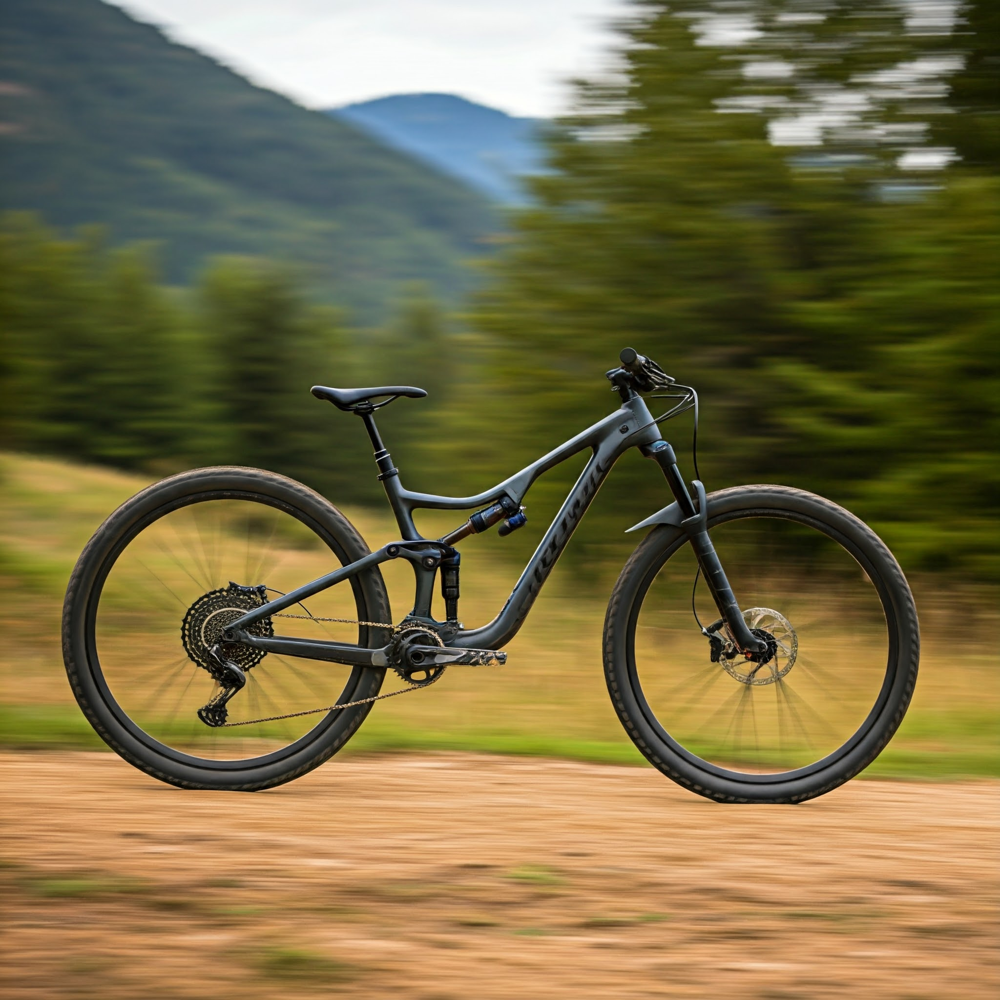
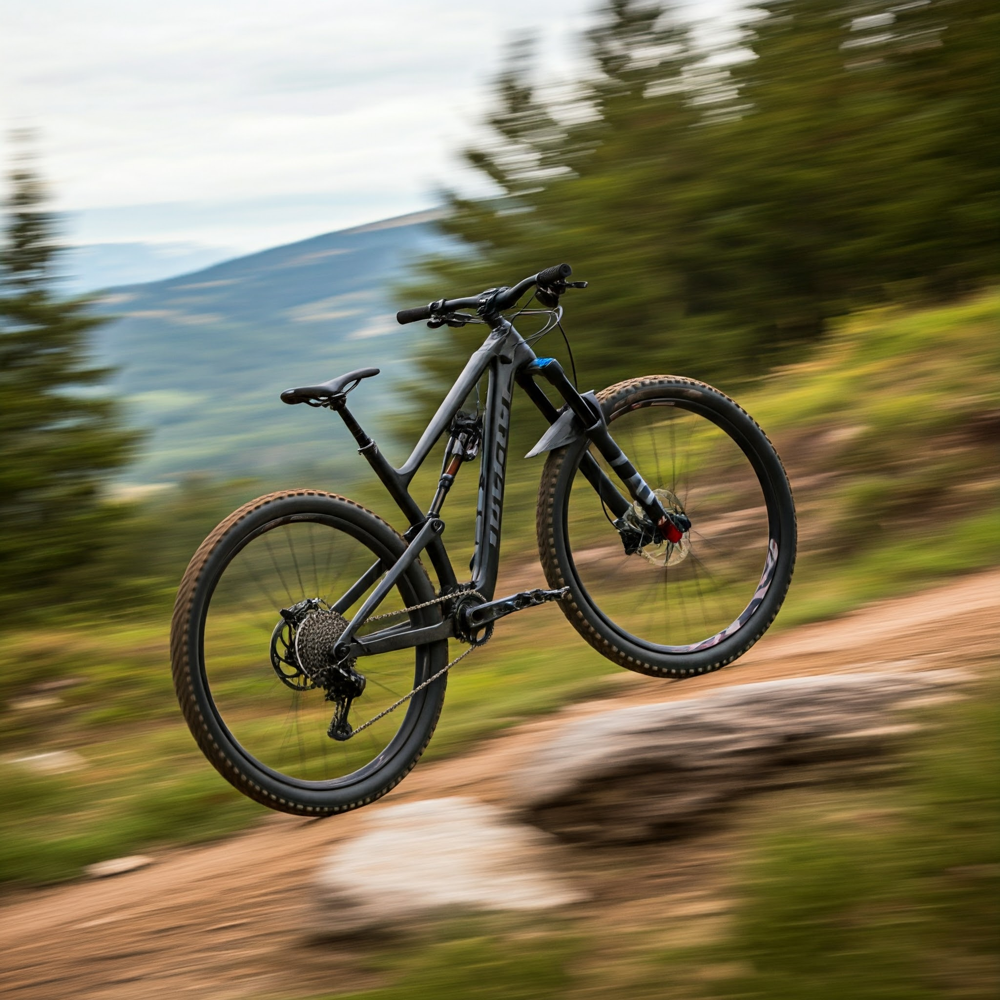
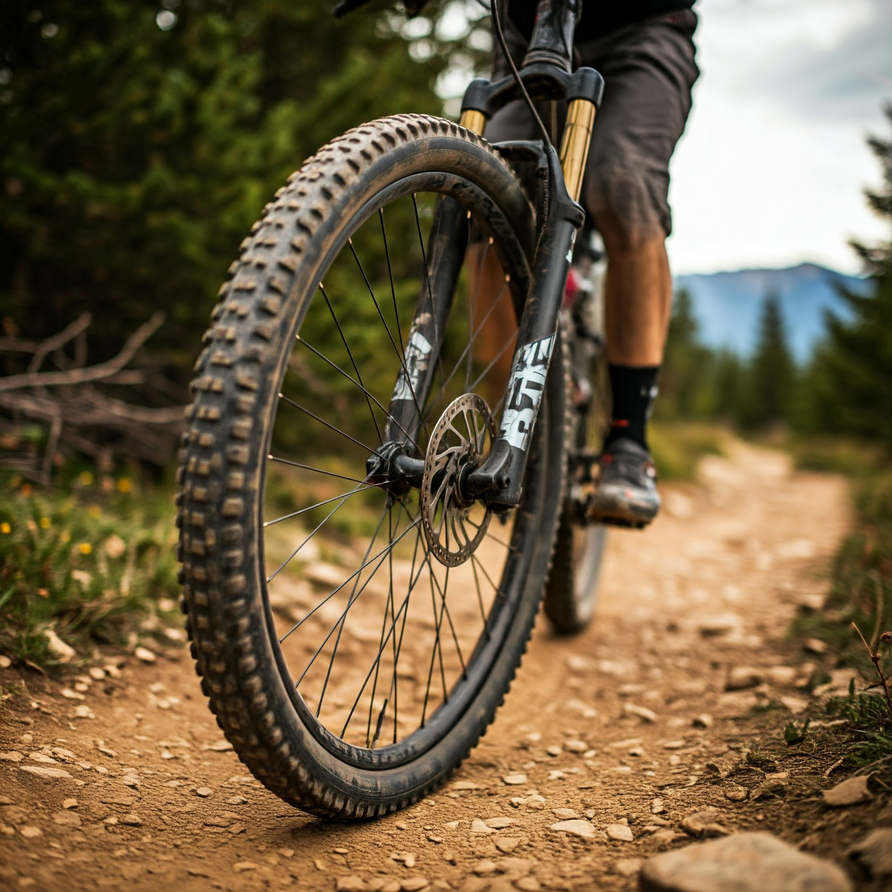
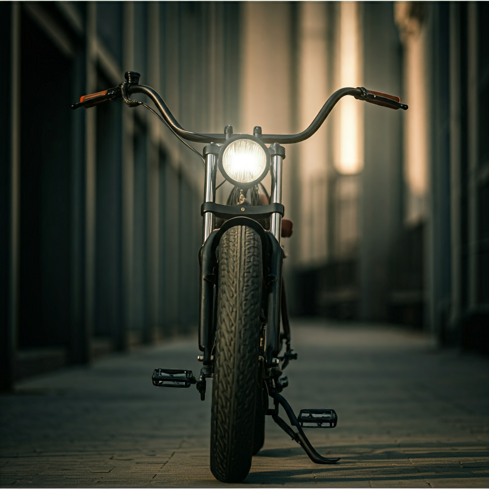
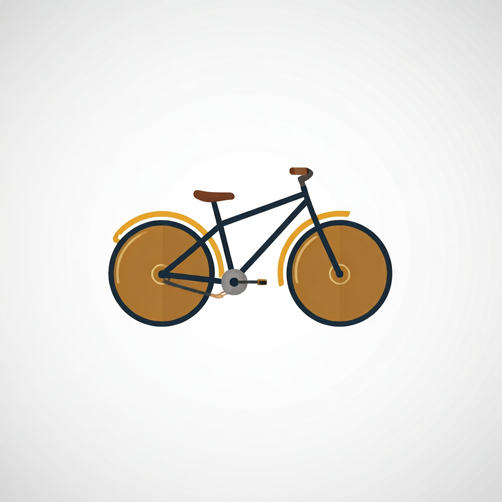

"Pedale para a aventura!"
Descubra o prazer de pedalar e explore novos caminhos. Na BIKE-S, você encontra a bicicleta perfeita para qualquer aventura. Contamos com uma variedade de modelos para todas as idades e estilos, além de acessórios e peças de alta qualidade. Nossa equipe de especialistas está pronta para te ajudar a escolher a bike ideal e oferecer serviços de manutenção para garantir que sua pedalada seja sempre segura e divertida.
"Sua paixão por duas rodas, nossa paixão por cuidar delas."
Na BIKE-S, a sua bicicleta está em boas mãos. Somos especialistas em conserto e manutenção, utilizando as melhores ferramentas e peças do mercado. Além disso, oferecemos um atendimento personalizado e soluções sob medida para todas as suas necessidades. Venha nos visitar e descubra por que somos a bicicletaria mais confiável da região.
"Pedalando juntos por uma vida mais saudável!"
A BIKE-S é mais do que uma loja, somos uma comunidade de apaixonados por ciclismo. Além de oferecer uma ampla variedade de bicicletas e acessórios, organizamos eventos e passeios para todos os níveis. Venha fazer parte do nosso grupo e descubra os benefícios de pedalar em boa companhia.
"Descubra o prazer de pedalar!"
Se você está começando agora no mundo do ciclismo, a BIKE-S é o lugar certo para você! Oferecemos uma grande variedade de bicicletas para todos os gostos e bolsos, além de acessórios e peças para equipar sua bike da melhor forma. Nossa equipe especializada está pronta para te ajudar a escolher a bicicleta ideal e te dar todas as dicas para começar a pedalar com segurança e diversão.
"Sua paixão por duas rodas tem endereço certo!"
Para os ciclistas mais exigentes, a BIKE-S oferece as melhores marcas e modelos de bicicletas, além de peças e acessórios de alta performance. Contamos com uma oficina completa para realizar todos os tipos de manutenção e reparos, garantindo que sua bike esteja sempre em perfeitas condições.
"Sua bicicleta merece o melhor!"
Na BIKE-S, você encontra todos os serviços que sua bicicleta precisa. Desde a revisão completa até a troca de peças, nossa equipe altamente qualificada utiliza as melhores ferramentas e técnicas para garantir um resultado impecável. Além disso, oferecemos serviços de personalização de bicicletas, para que você tenha uma bike única e exclusiva.